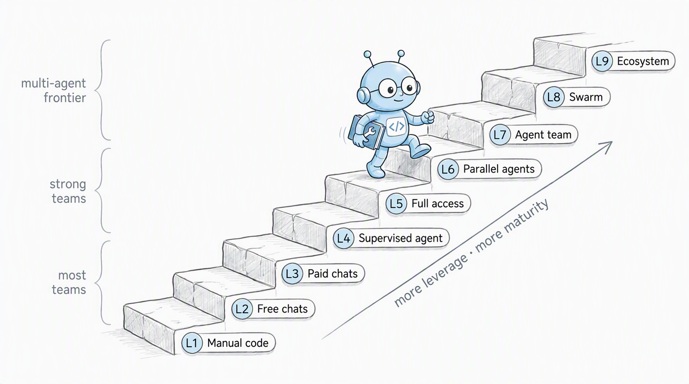

Для заказчиков — то, что нельзя показать. Для себя — то, что можно
Для заказчиков: внутренние продукты
Делаю AI-агентов для внутренних продуктов заказчиков. Один из публичных примеров:
Azul Intelligence Cloud AI Assistant(23.09.2026): вопросы на естественном языке о Java в проде, где прячутся риски по лицензиям и безопасности. Режим read-only.
Для себя: выйти за рамки
Во всех смыслах: другой домен (игры), другой стек (3D в браузере), другие правила (никакого бюджета на инфраструктуру).
Без цели заработать: ни магазинов, ни рекламы, ни монетизации. Игры бесплатные.
Всё, что тут показываю, открыто: код, git log, демо.
правила эксперимента
Вериги: $20 + $100
$20
подписка Claude Pro, с её лимитами
$100
OpenRouter: GLM, Kimi — open-weight модели
Заплатить за Max — не проблема. Проблема в том, что тогда не узнаешь главного.
Вопрос, ради которого всё затевалось
Для какого класса задач effort medium даёт то же, что x-high?
Лимит заставляет считать: дешёвая модель и низкий effort везде, где их хватает, а дорогой — только там, где без него никак.
карта местности
Лестница L1 → L9

Девять уровней эволюции AI-разработки — по курсу Алексея Литвинова «AI-Assisted Engineering»: alekseilitvinau.com/edu
о чём доклад
Три проекта, три ступеньки
L4→L5
Race the City
июль 2026
Гонки по любому городу мира. Один агент с полным доступом, релиз каждые полчаса.
узкое место — я сам
L5→L6
claude-remote-vm-dev
август 2026
Сессии Claude Code на VM внутри периметра. Работают, пока ноутбук закрыт.
инфраструктура для следующей ступеньки
L6→L7
itffm 🍄
сентябрь 2026
Грибной лес по реальному месту. Параллельные агенты в worktree, модели по ролям.
узкое место — ревью
репозиторий
ступенька L4 → L5 · Race the City
Введи название города и поезжай
Low-poly версия реального города: дороги, дома, мосты, рельсы, вода, рельеф
19 машин, соперники, заезды на время, автопилот
Трафик, пешеходы, трамваи, корабли, погода, день и ночь
data/species/*.yaml ├─ morphology → 3D-модель ├─ ecology → где и когда растёт └─ name/text → энциклопедия
Новый вид — это строчка данных, а не задача для 3D-художника.
itffm в цифрах (git log)
17 дней от спеки до v0.103
375
коммитов, 150 из них за второй день
126
тегов-релизов, v0.1 → v0.103
57
видов в YAML: грибы, ягоды, травы, находки
109
файлов тестов, 25k строк TS
9 спек, 6 планов. Спека начинается с раздела 0: «где код оказался умнее спеки».
Перенесено из RTC без изменений: boot-check, CHANGELOG, FEATURES.md, деплой по тегу.
побочный эффект №1
«А можно карту побольше?» → бесконечный лес
Race the City, v0.92мир — квадрат 2×2 км вокруг центра, на краю пустота
→
просьба игроков«расширьте радиус от центра»
→
itffm, 10 сентябрялес нарезается чанками, ходи в любую сторону
Как это решалось
Брейншторм вечером, дальше 6 часов автономной работы, пока я спал. В спеке записано: решения, не утверждённые до сна, агент принимает консервативно и выносит в follow-up, а не угадывает.
Что получилось
Чанк, для которого OSM или рельеф не загрузились, достраивается процедурно с того же seed. Стены нет, ошибки на экране нет.
L6 → L7 на практике · itffm, git log
11 сентября: одно решение, семь веток
06:04план: 11 баг-репортов с плей-теста + старые TODO одной пачкой → моё решение: параллельно
06:12убран экран дисклеймера, мешавший на мобильных
06:22рельсы проваливались в рельеф, деревья росли сквозь путь
06:25швы земли между чанками
06:27коллизия двери хижины
06:38Esc открывает меню паузы
06:42синтезированный звук воды: ручей слышно раньше, чем видно
06:54perf: отсечение по дистанции
каждая строка после плана — мерж своей ветки worktree-agent-<id>
Моё — одно решение
собрать репорты в один план
увидеть, что задачи независимы
сказать «параллельно»
Claude Code — всё остальное
7 субагентов в одном сообщении
7 worktree и 7 веток
тесты в каждой, 7 мержей по одной
что на самом деле поменялось между L6 и L7
Один примитив — git worktree — и два оркестратора
L6
claude-remote-vm-dev
я → rd-start … --session A я → rd-start … --session B я → rd-start … --session C
Worktree на каждую сессию написал я. Сколько агентов и над чем — решает человек.
Worktree создаёт инструмент. Как разложить работу — решает агент, я только разрешаю.
Где запущен агент — уже не важно:
своя VMtmux + systemd
облакоclaude.ai/code
телефонпульт к любой из них
новое узкое место
Что тесты не ловят
Вешенка рисовалась плоским блином: генератор ставил ножку по центру
Химеры: шляпка 25 см на ножке 6 см
243 гриба по 5 мешей → тысяча draw calls, повис даже headless-браузер
Ответ — инструмент «посмотреть глазами»: npm run silhouette-sheet, все силуэты видов на одном листе.
Узкое место сместилось
С «написать код» на «проверить результат».
Агенты пишут быстрее, чем я успеваю посмотреть. Ревью и визуальная проверка — это теперь главная работа человека.
возвращаемся к вопросу про вериги
Medium или x-high: зависит от класса задачи
класс задачи
пример
гипотеза
Исполнение по плану
задача из плана с готовыми тестами
medium ≈ x-high, а часто хватает и GLM/Kimi
Механика по образцу
ещё одна машина, ещё один вид гриба в YAML
medium ≈ x-high
Диагностика
невидимая стена на набережной, третий раз
x-high окупается
Спека и план
бесконечный мир, квесты, шахта
x-high и дорогая модель
Чем лучше спека и тесты, тем меньше нужен effort на исполнении. Платишь один раз на этапе плана.
побочный эффект №2
Лес на шаренном экране против крика на синке
Синк стартапа. Фаундеры орут друг на друга. Кто-то шарит экран, а там тихий лес: шаги, птицы, ручей, гриб под берёзой.
Градус спадает.
Такого в спеке не было.
Вывод для продукта
Ценность находится там, где её не планировал. Дешёвый релиз (тег → Pages) позволяет быстро показать вещь людям и посмотреть, как они используют её на самом деле.
итого по ступенькам
Что поменялось от проекта к проекту
Race the City
remote-vm-dev
itffm
Ступенька
L4 → L5
L5 → L6
L6 → L7
Агентов
один, в моём терминале
N сессий на VM
субагенты в worktree + облако
Модели
Opus на всё
любой провайдер
Opus планирует, Sonnet делает
Память
AGENTS.md, TODO
ветка = сессия
CLAUDE.md, спеки с разделом 0
Узкое место
мой сон
ноутбук
ревью и «посмотреть глазами»
что можно унести в свою команду завтра
Пять правил
Спека до кода. Агент исполняет план. Пустой промпт порождает импровизацию
Контракт в репозитории. AGENTS.md / CLAUDE.md, инварианты, грабли. Агент не помнит, репозиторий помнит
Проверка запуска, а не только тестов. boot-check ловит то, что зелёный CI пропускает
Один агент — один worktree. Без этого параллельность превращается в конфликты
Инструменты для глаз. Сжимайте ревью: контактные листы, readout, 👀 в changelog
что дальше
L8 и L9: рой и экосистема
L5полный доступ
L6параллельно
L7я здесь
L8рой
L9экосистема
Чтобы подняться выше, нужно не больше агентов, а автоматическая проверка: агент-ревьюер, визуальная регрессия, плей-тест ботом.